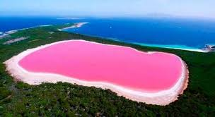
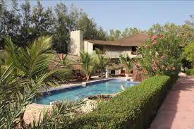

Lac Rose!
Presentation
Le lac Rose, de son vrai nom lac Retba, est l'un des sites les plus visités du Sénégal. Ce lac salé doit sa renommée à la teinte originale et changeante de son eau, mais aussi au rallye Paris-DakaLe lac Rose est un grand lagon de 3 km2, peu profond, entouré de dunes et situé à quelques centaines de mètres de l’océan Atlantique, à 35 km au nord-est de Dakar. Sa couleur rose orangé est due à Dunaliella salina, une algue verte halophile, organisme microscopique qui fabrique, surtout quand le ciel n'est pas couvert (donc plutôt en période sèche de novembre à juin), l'astaxanthine, un pigment rouge de la famille des carotènes qui lui permet de mieux résister aux forts rayons solaires et à la concentration de sel. La couleur rose est moins visible pendant la saison des pluies (juillet à octobre) car le rayonnement solaire est limitée par la couverture nuageuse dont il constituait l’ultime étape.
Exploitation du sel
L'eau est particulièrement salée : 380 grammes par litre. Le sel est exploité depuis les années 1970. Les hommes, dans l'eau jusqu'à la poitrine, cassent avec un piquet le sel déposé sur le fond avant de le ramasser à la pelle pour remplir des pirogues d'une capacité d'une tonne. Les femmes sont chargées de débarquer les pirogues et d'entasser le sel sur les bords pour le sécher et le blanchir au soleil. Tous s'enduisent le corps de beurre de karité pour se protéger de la salinité corrosive. Le sel est destiné aux conserveries de poisson ou exporté.

Calao du lac rose
Situé près des dunes de sable du Lac rose, cet hôtel comprend une piscine extérieure avec bain à remous ainsi qu'une connexion Wi-Fi gratuite. Il se trouve à 35 km de Dakar et de son aéroport. Tous les logements de l'hôtel Le Calao du Lac Rose sont dotés d'une moustiquaire et offrent une vue sur le jardin. Les chambres comprennent une salle de bains privative et les tentes ont accès à une salle de bains commune. Un petit-déjeuner continental est servi tous les matins dans le confort des chambres ou sur la terrasse. Vous pourrez également savourer une cuisine traditionnelle et européenne dans le restaurant, ou encore prendre un verre au bar.
